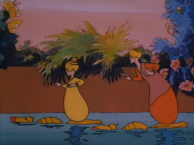
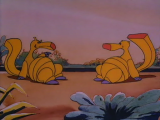

Desde pequeño que deseaba poder ver esta serie completa. Espartaco y el Sol bajo el Mar (Les Mondes Engloutis - Los Mundos Absorbidos) es una serie Francesa que se emitió en TV durante los inicios de los 90 y que consta de 52 capítulos.
{kind=link}
Cuenta la historia de Espartaco, Arkana, Rebeca y Matt en la búsqueda de la Oracita que detendrá la muerte de Thera, un sol artificial que permite la vida de los Arcadianos, gente que sobrevivió al gran cataclismo que sumergió los continentes y que viven en el interior de la Tierra.
Lo que más recordaba de la serie eran Big y Bag, una especie de hormiguero amarillo los cuales ayudan a los personajes principales en esta travesía.
En esta necesidad de ver completas las series de mi infancia bajé la serie completa, lamentablemente fue lanzada solamente en Francés y existe una versión remastepirateada que ofrece subtítulos en noruego. Como dijo el Ati, viendo lo bueno, aprenderé un nuevo idioma xD. Por suerte el francés no es tan críptico y algo se puede entender.
{kind=link}
{kind=link}
{kind=link}